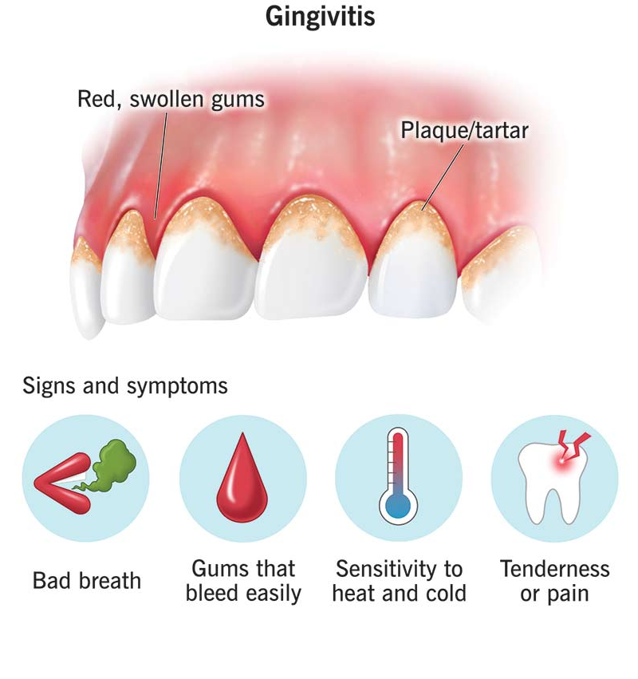

Introduction
As dentists, we encounter patients with bleeding gums on a regular basis. While bleeding gums may seem like a minor issue to some, they can often be a sign of underlying oral health problems that require attention. In this blog post, we'll delve into the causes of bleeding gums, the importance of addressing them, and the treatments available from a dentist's perspective.
Understanding the Causes of Bleeding Gums
- Gingivitis: This is the earliest stage of gum disease and is caused by the buildup of plaque along the gumline.
- Poor Oral Hygiene: Not brushing and flossing regularly allows plaque to accumulate, leading to gingivitis and, eventually, gum disease.
- Aggressive Brushing or Flossing: Brushing too hard or using a toothbrush with hard bristles can damage delicate gum tissue and cause bleeding.
- Medications: Some medications, such as blood thinners, can increase the likelihood of bleeding gums.
- Hormonal Changes: Hormonal fluctuations, such as those during pregnancy or menstruation, can make gums more prone to bleeding.
- Systemic disease: Certain medical conditions, such as diabetes or leukemia, can affect gum health and cause bleeding.

Why Addressing Bleeding Gums is Important
Ignoring bleeding gums can have serious consequences for oral health. Untreated gum disease can progress to periodontitis, a more advanced stage of gum disease that can lead to tooth loss and other complications. Additionally, research has shown a link between gum disease and systemic health issues such as heart disease and diabetes.
Prevention Tips for Bleeding Gums
- Brush Twice a Day: Brushing your teeth twice a day with fluoride toothpaste helps remove plaque and bacteria.
- Floss Daily: Flossing removes plaque and food particles from between the teeth and along the gumline, where your toothbrush can't reach
- Use a Soft-Bristled Toothbrush: To avoid damaging your gums while brushing.
- Visit Your Dentist Regularly: Regular dental checkups and cleanings are essential for preventing gum disease and catching any issues early
- Eat a Healthy Diet: A balanced diet rich in fruits, vegetables, and lean proteins can help support gum health
- Avoid Tobacco Products: Smoking and using other tobacco products can increase the risk of gum disease and other oral health problems.
Treatment Options for Bleeding Gums
If you're experiencing bleeding gums, it's essential to see your dentist for an evaluation.
- Professional Cleaning: Your dentist can remove plaque and tartar buildup from your teeth and gums during a professional cleaning
- Scaling and Root Planing: For more advanced gum disease, a deep cleaning procedure called scaling and root planing may be recommended to remove plaque and tartar from below the gumline
- Medication: In some cases, your dentist may prescribe medication to help treat gum disease and reduce inflammation
- Surgical Treatment: In severe cases of gum disease, surgical interventions such as gum grafting or flap surgery may be necessary to repair damaged gum tissue
Final Words
Bleeding gums are not something to ignore. They can be a warning sign of gum disease or other oral health issues. If you're experiencing bleeding gums, don't hesitate to reach out to your dentist for guidance and treatment options. Your oral health is worth it!